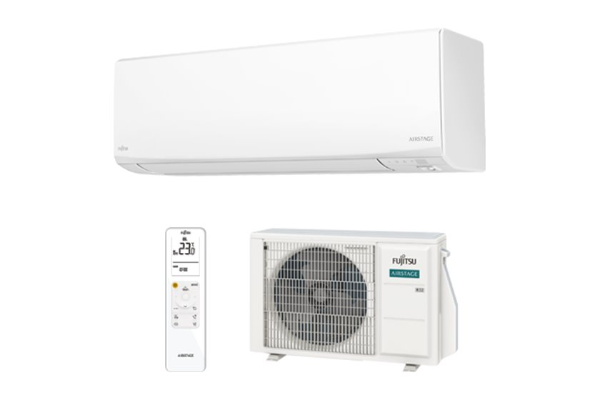

Në mur
Designer KJ
ASEH07/09/12/14KJCAL
Dizajn minimal me vija të pastra, në të bardhë ose të zezë. Sensori e ul fuqinë kur nuk ka njeri në dhomë.
- Klasa
- A+++ / A+++
- Zhurma
- 19 dB
- Ngroh deri
- -20°C
2,0 · 2,5 · 3,4 · 4,2 kW 7.000 deri 14.000 BTU
Kërko ofertë